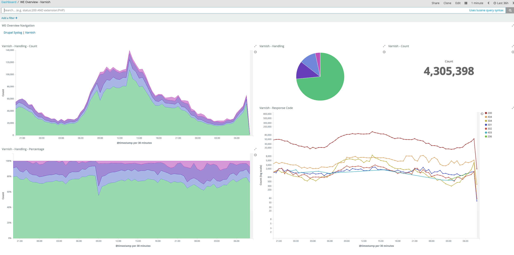
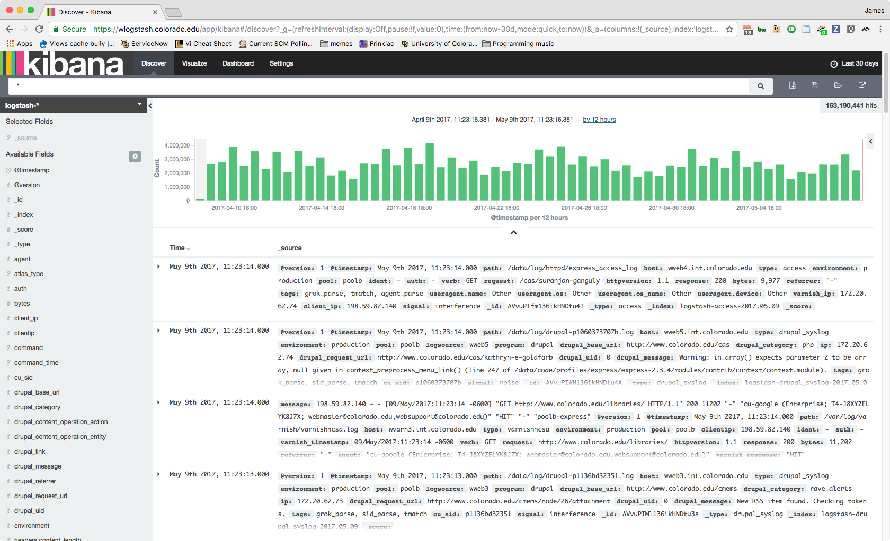

ELK Stack and Web Express
James Fuller
Assistant Director, Development and Operations
Web Communications team in
Strategic Relations and Communications
Morning!
- I work on the Web Express team.
- We run a SaaS that currently has ~1400 instances of Drupal (a CMS written in PHP).
- Runs on-prem using servers from Systems Engineering in OIT.
Overview
- Our situation/problem
- Current ELK implemenation
- Future directions
Web Express generates a lot of data
Log files
- Drupal application
- Drupal authentication (for ITSO compliance)
- Apache access
- Apache error
- MySQL slow transaction
- Python application
- Apache for python application
- MongoDB for python application
- Reverse proxy access
They are all over the place
- 6 PHP/Apache servers
- 2 Reserve proxy servers
- 3 Database servers
- Handful of other servers for various orchestration and monitoring tasks
- The cluster has ~16 servers
- That is just in our Production cluster, we also have DEV and TEST enviroments
- As well as logging from 3rd party hosting and the CI service
Enter ELK
http://www.lalocadelosgatos.com/wp-content/uploads/2012/10/gato-disfraz-ciervo.jpeg
{kind=link}
Gather
- Syslog and friends (rsyslog, syslog-ng, etc.)
- Filebeat
Transform - Logstash
Three basic sections of configuration
- Input - where is this coming from?
- File, Beat, HTTP, etc.
- Filter - break monolithic messages into data
- Grok, date, mutate, etc.
- Output - what should we do with the events after we chop?
- Elasticsearch
Store, index, and search
Elasticsearch
Visualization - Kibana
Interesting parts of our configuration
Grok
From the logstash docs:
Grok is currently the best way in logstash to parse crappy unstructured log data into something structured and queryable.
Filter - Drupal Syslog
%{SYSLOGBASE} %{URI:drupal_base_url}\|%{INT:drupal_unix_timestamp}\|
%{DATA:drupal_category}\|%{IP:ip}\|%{URI:drupal_request_url}\|
(?:%{URI:drupal_referrer}|)\|%{INT:drupal_uid}\|(?:%{URI:drupal_link}|)\|
%{GREEDYDATA:drupal_message}
Filter - MySQL Slow Queries
input {
file {
type => "mysql-slow"
path => "/var/log/mysql/mysql-slow.log"
codec => multiline {
pattern => "^# User@Host:"
negate => true
what => previous
}
}
}
filter {
if [type] == "mysql" {
grok {
match => [
"message",
"^# User@Host: %{USER:user}(?:\[[^\]]+\])?\s+@\s+%{HOST:host}?\s+\[%{IP:ip}?\]"
]
}
grok {
match => [
"message",
"^# Query_time: %{NUMBER:duration:float}\s+Lock_time: %{NUMBER:lock_wait:float} Rows_sent: %{NUMBER:results:int} \s*Rows_examined: %{NUMBER:scanned:int}"
]
}
grok {
match => [
"message",
"^SET timestamp=%{NUMBER:timestamp};"
]
}
date {
match => [ "timestamp", "UNIX" ]
}
}
}
What this allows us to do
User reports that a for a few weeks page title is not being set correctly and appears to be changing back after they have corrected it.
When can start with 30 days of logs
163 million events
Limit search to Production and our Application log

Down to 10 million events
Limit further to the specific instance and for 'Interference'

Down to 309 events
Limit further to 'content update' events

14 events
Is this build stable on Test and ready for Production?

Future for OSR
- Adding additional logging for other services in the stack
- Upgrade, maybe?
- Looking at current versions for new projects